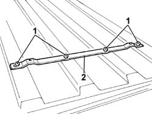

5040A45 CONDENSATOR SUPPORT CROSS PIECE/BRACKETS - R.R.
- Path
- Procedures > 50 AUXILIARY UNITS > 5040 AIR CONDITIONING CASING AND COMPONENTS > 5040A CHECKING OPERATION OF AIR CONDITIONER (TEMPERATURE) > 5040A45 CONDENSATOR SUPPORT CROSS PIECE/BRACKETS - R.R.
- Kind
- repair procedure (removal / refitting; the operation number is the code)
- Applies to
- all engines; all production periods
- Interactive page
- https://sloeber94.github.io/elrnDB-fDct/en/#/244001271
Applies to: all engines; all production periods; only with equipment: Supplementary air conditioner
Removing
 Refitting
Refitting- Disconnect the negative battery terminal.
Op. 0010T84 COOLANT FOR AIR CONDITIONING SYSTEM DEHYDRATE AND RECHARGE
Op. 5040A47 AIR CONDITIONING CONDENSATOR LID - R.R.
Op. 5040A40 AIR CONDITIONER CONDENSER - R+R
- Remove the sealant from the condenser bracket securing points.
1. Use a drill to remove the retaining rivets.
2. Remove the condenser mounting bracket.
- Proceed in the same way for the remaining bracket.

Applies to: all engines; all production periods; only with equipment: Supplementary air conditioner
Refitting
Removing- Carefully clean sealant residues off the condenser bracket support surfaces.
- Spread appropriate sealant around the holes.
- Position the condenser brackets and secure with appropriate rivets.
- Spread the fastening points with appropriate sealant.
Op. 5040A40 AIR CONDITIONER CONDENSER - R+R
Op. 5040A47 AIR CONDITIONING CONDENSATOR LID - R.R.
Op. 0010T84 COOLANT FOR AIR CONDITIONING SYSTEM DEHYDRATE AND RECHARGE
- Connect the negative battery terminal.